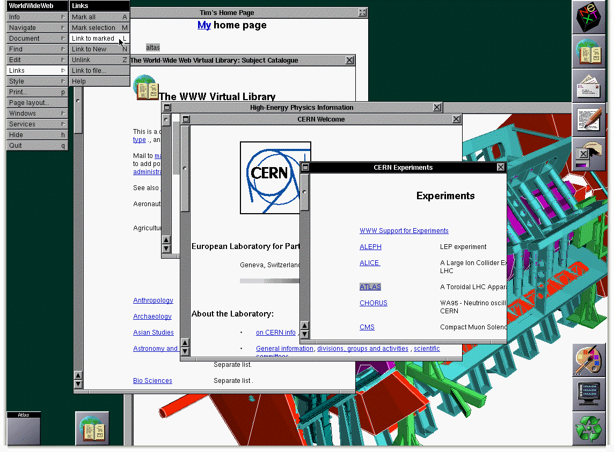

Historia de Internet - Línea del Tiempo
Desde ARPA hasta la era de la nube

Eventos Relacionados
| 1989 - WWW | 1993 - Mosaic | 1995 - Internet Comercial | 1998 - Google |
1990 – Primer Navegador WebEn noviembre de 1990, Tim Berners-Lee completó el desarrollo del primer navegador web del mundo, al que inicialmente llamó "WorldWideWeb" (todo junto). Este programa no solo era un navegador, sino también un editor: los usuarios podían tanto ver páginas web como crearlas y modificarlas directamente desde la misma aplicación. Esta fue una característica revolucionaria que reflejaba la visión original de Berners-Lee de la Web como un medio colaborativo, no solo de consumo pasivo. El navegador WorldWideWeb fue desarrollado en una computadora NeXT, la misma marca de computadoras creadas por Steve Jobs después de dejar Apple. Berners-Lee eligió esta plataforma porque el sistema operativo NeXTSTEP incluía herramientas avanzadas de desarrollo que le permitieron crear rápidamente el software. De hecho, logró desarrollar el primer navegador y el primer servidor web en solo dos meses, trabajando en su tiempo libre. La interfaz del navegador era sorprendentemente moderna para su época. Incluía una ventana principal para mostrar contenido, botones de navegación, y la capacidad de abrir múltiples ventanas simultáneamente. Los usuarios podían hacer clic en enlaces azules subrayados para saltar a otras páginas, una convención que se mantiene hasta hoy. También podía mostrar listas, encabezados y diferentes estilos de texto, aunque las capacidades gráficas eran limitadas. El 25 de diciembre de 1990, Berners-Lee realizó la primera comunicación exitosa entre un navegador web y un servidor a través de Internet. Este momento histórico marcó el nacimiento funcional de la World Wide Web. El primer sitio web, alojado en la computadora NeXT de Berners-Lee, explicaba qué era la Web, cómo crear páginas web, y cómo configurar un servidor web. Su URL era http://info.cern.ch.  🔗 Fuente: home.cern/birth-web |